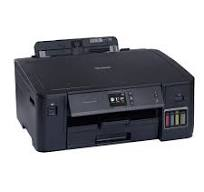

Biodata Diri
Nama: Abdul Fikri Husaini
NIM: 607012400104
Kelas: D3SI 48-03
Nama Mata Kuliah
Jaringan Komputer
Pembahasan Perangkat Jaringan Komputer
Nama Perangkat: Printer
Gambar:
Fungsi: Salah satu fungsi printer pada komputer adalah
mencetak dokumen kerja, seperti laporan, proposal, atau surat. Di
kantor, printer berguna untuk memastikan bahwa semua dokumen penting
tersedia dalam bentuk cetak.
Jenis atau macam-macam Perangkat Akhir:
Printer: Digunakan untuk mencetak dokumen. Dalam jaringan, printer
dapat diakses oleh banyak perangkat melalui Wi-Fi atau koneksi kabel.
Tablet: Perangkat yang lebih kecil dari laptop dan lebih besar dari
smartphone, biasanya digunakan untuk membaca, hiburan, atau
presentasi.
Laptop: Bersifat portabel dan sering digunakan untuk keperluan
profesional atau pribadi. Dapat terhubung ke jaringan dengan Wi-Fi
atau LAN.
Smartphone: Perangkat mobile yang memungkinkan pengguna mengakses
internet, melakukan panggilan, mengirim pesan, atau menjalankan
aplikasi.
Smart TV: Dapat digunakan untuk streaming konten multimedia dari
jaringan internet atau lokal.
Komputer Desktop: Digunakan untuk keperluan pekerjaan, belajar, atau
hiburan. Biasanya terhubung ke jaringan melalui kabel LAN atau Wi-Fi.
Lampiran File Tutorial
File langkah-langkah membuat web hosting dapat Dilihat melalui tautan
ini:
Klik di sini